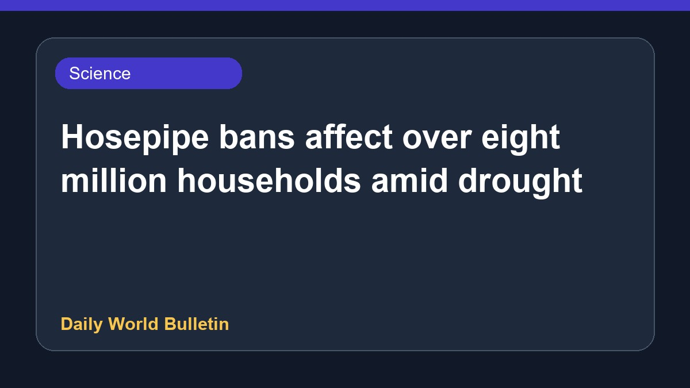

Hosepipe bans affect over eight million households amid drought

More than eight million households across the region are currently facing strict hosepipe bans following the official declaration of a drought. This situation has prompted significant public discussion and raised important questions regarding how efficiently water resources are managed during dry periods. Authorities have restricted certain water uses to preserve supplies, while residents seek clarity on whether their specific localities are impacted by these newly implemented environmental measures.
Original source: BBC Science
Hosepipe bans in force as drought declared - is your area affected? ↗
Hosepipe bans in force as drought declared - is your area affected? ↗